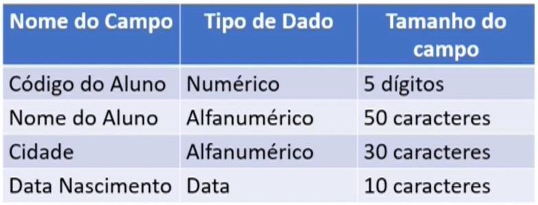

O que é?
Sendo o ultimo passo da modelagem de dados antes
da criação de um banco de dados em si, o modelo físico
segue trabalhando as características dos modelos
conceitual e lógico mais detalhadamente
Como funciona?
Modelo físico de banco de dados é como o nome sugére
as estruturas físicas de armazenamento de dados, a
análise das caracteristicas e recursos necessários
para armazenamento e manipulação das estruturas de
dados.
Além disso, neste modelo temos detalhados os
componentes da estrutura física do Banco de Dados,
como: tabelas, campos, tipos de valores e indices,
isso deve ser descrito nesse modelo e, só então
chegamos a criação do banco de dados, usando um
sistema gerenciador de banco de dados.
É nessa fase que proporcionamos o detalhamento
de todo o banco de dados, detalhamento das tabelas,
dos campos, dos tipos de valores, indices de acesso,
apenas após esta etapa estamos aptos para a criação
propriamente dita do banco de dados.
Representação grafica:

Sistema Gerenciador de Banco de Dados (SGBD)
São programas utilizados para gerenciar a estrutura
e as informações dos banco de dados. Suas funções
incluem: transformar e apresentar dados, controlar
o acesso de multiusuario e as interfaces de comunicação
do banco de dados. Os programas usados em um SGBD
permitem a criação de estruturas, manutenção dos
dados, gerenciamento de transações e extração de
informações com objetivo de consultas, relatórios,
etc.
Funciona como um intermediario entre as aplicações
e a base de dados. Existem certas divisões entre os
tipos de SGBD, como por exemplo: os SGBDR (Sistema
Gerenciador de Banco de Dados Relacional) e os
chamados de NOSQL (Não relacionais).
Pronto para testar
seu conhecimento?
Aqui vai um pequeno questionário para avaliar seu conhecimento! Não se preocupe pois a questão serve apenas para testar seu conhecimento sobre este módulo!
O modelo físico de dados é a última etapa da modelagem. Qual é o foco principal ao criar o modelo físico de dados?